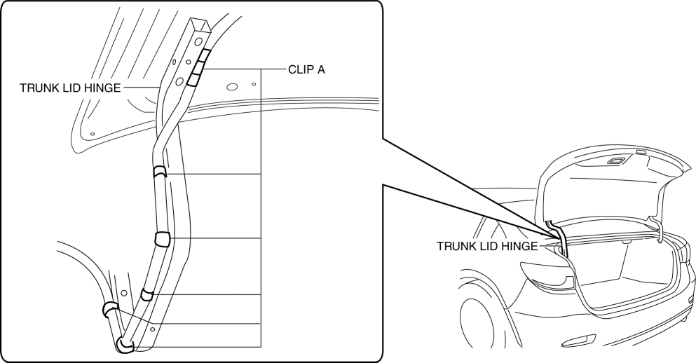
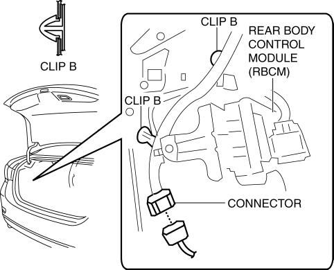
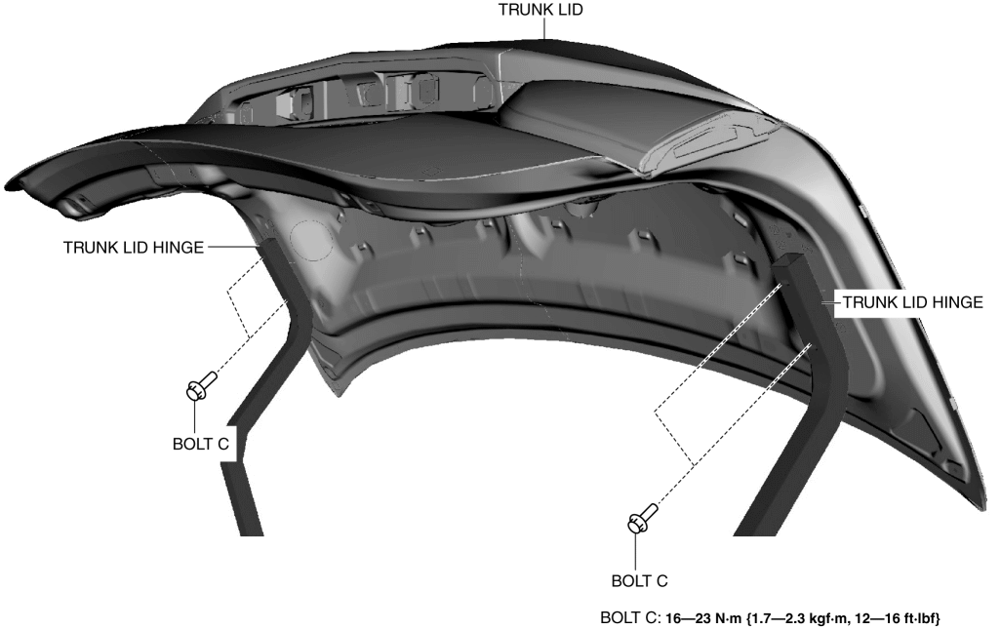
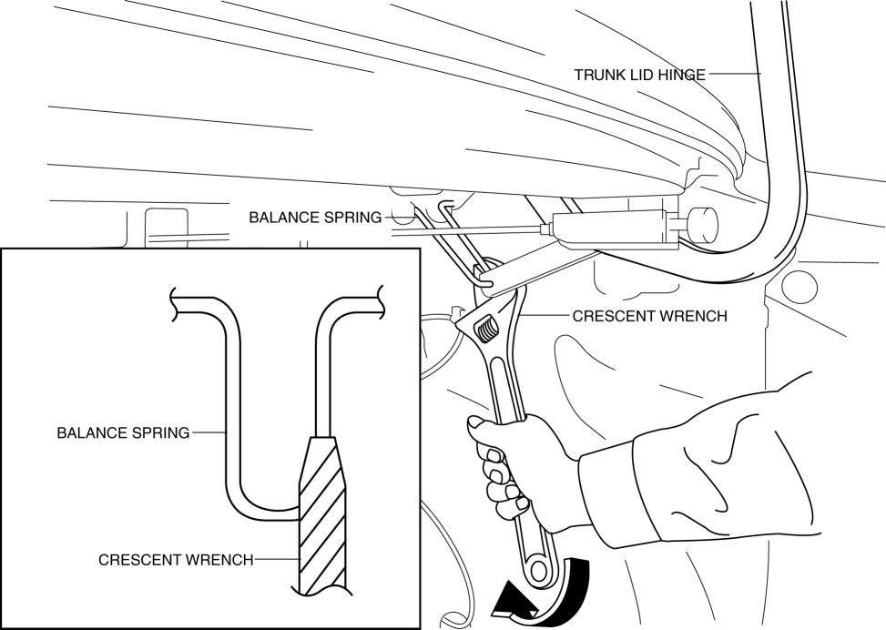
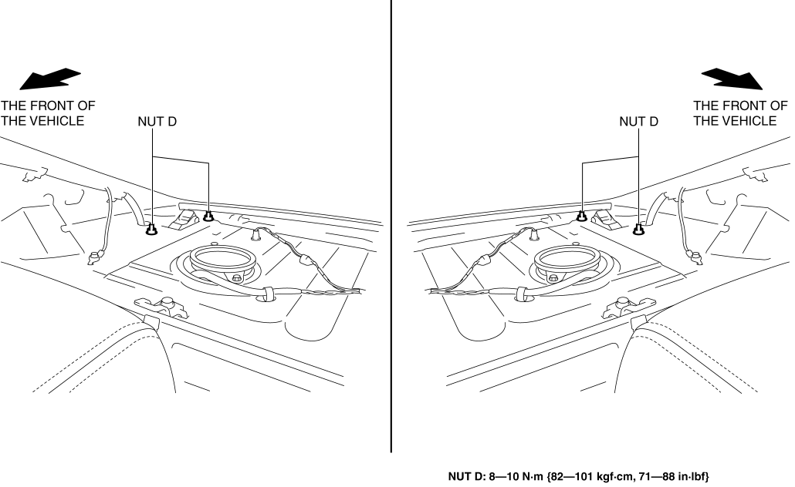

< Previous
Next >
2014 -
Mazda6 -
Body and Accessories
TRUNK LID REMOVAL/INSTALLATION
1. Disconnect the negative battery cable. (See NEGATIVE BATTERY CABLE DISCONNECTION/CONNECTION [SKYACTIV-G 2.5].)
2. Remove the following parts: a. Trunk lid recess (See TRUNK LID RECESS REMOVAL/INSTALLATION.)
b. Trunk lid trim (See TRUNK LID TRIM REMOVAL/INSTALLATION.)
3. Set the trunk side trim aside. (See TRUNK SIDE TRIM REMOVAL/INSTALLATION.)
4. Remove clips A shown in the figure.

5. Set the rear body control module (RBCM) bracket aside. (See REAR BODY CONTROL MODULE (RBCM) BRACKET REMOVAL/INSTALLATION.)
6. Disconnect the connector.

7. Remove clips B.
8. Remove bolts C, then remove the trunk lid.

9. Remove the following parts: a. Rear seat cushion (See REAR SEAT CUSHION REMOVAL/INSTALLATION.)
b. Rear side seat back (See REAR SIDE SEAT BACK REMOVAL/INSTALLATION.)
c. Tire house trim (See TIRE HOUSE TRIM REMOVAL/INSTALLATION.)
d. C-pillar trim (See C-PILLAR TRIM REMOVAL/INSTALLATION.)
e. High-mount brake light (See HIGH-MOUNT BRAKE LIGHT REMOVAL/INSTALLATION)
f. Rear package trim (See REAR PACKAGE TRIM REMOVAL/INSTALLATION.)
10. Using a crescent wrench, remove the balance spring in the direction of the arrow shown in the figure from trunk lid hinge.

11. Remove nuts D.

12. Remove the trunk lid hinge.
13. Install in the reverse order of removal.
14. Adjust the trunk lid. (See TRUNK LID ADJUSTMENT.)
< Previous
Next >
© 2012 Mazda North American Operations, U.S.A.